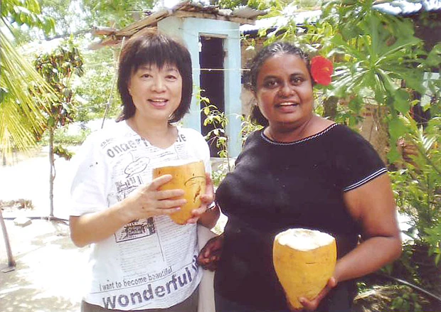
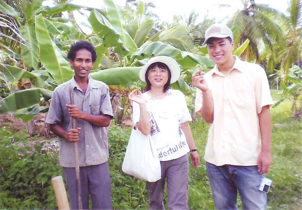
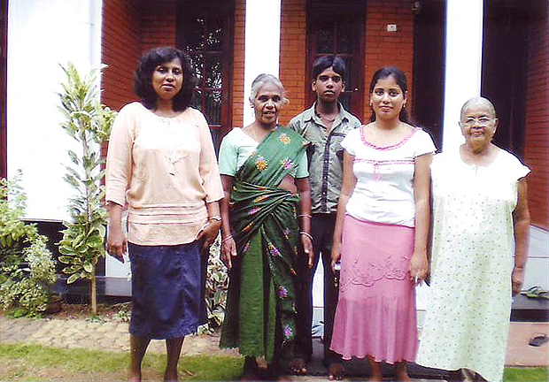
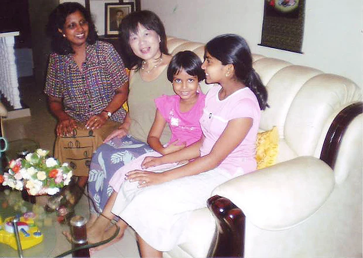
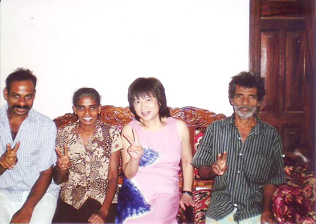
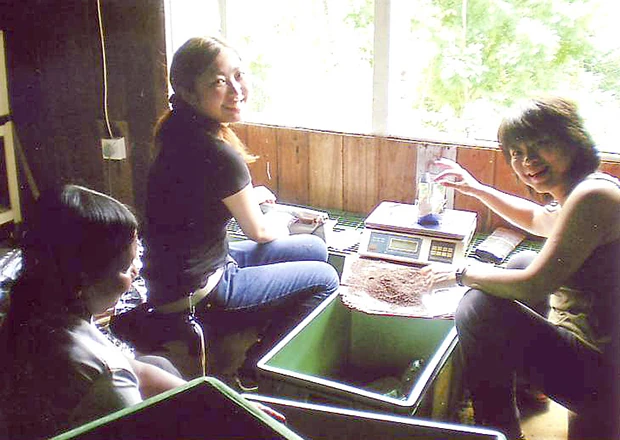

「このプログラムは、個人レッスンなので完全に自分のレベルにあった勉強ができる、楽しそうなボランティアがある、ホームスティでスリランカの人たちの日常生活が体験できるということで参加を決めました。
Miss Deepa先生の英語レッスンは、趣味の話も色々聞かせてもらいとても魅力的でした。
日記のチェックは実際に自分が考えていること、その日にした事を書くのでそれの英語での表現の仕方を教わり、日常会話を知りたい私にとてもよかったです。

ファミリーからはたくさんの優しさをもらいました。
ホームステイでは、いろんな人と話ができ良かったです。
もっと長くいてもっと色んなことが知りたかったと思います。

低開発村視察は、最初『面倒なプログラムで参加しなくてはいけないの？』と思ってましたがこれが一番良かったです。牛の糞から天然有機肥料ができる過程、発生するガスも利用するなどとても興味がありました。
村のご家庭で出していただいたジンジャーティの美味しかった事！ プランテーションに植林、自分のオリジナルな名前もつけ楽しかったです。又いつか訪れることがあればその木の成長を見てみたいです。
スリランカという国は色んな人種、言葉、思想が混在し、裕福な人、貧乏な人、教育のある人・ない人、その格差がたくさんあるように思います。自然が豊かで果物が豊富。紅茶はさすがに美味しい。
カレーもどれも美味しい。

念願のスリランカへ行けて満足です。 思ったとおりとても魅力的な国でした。
２週間はあまりに短くて英語会話はまだまだですが、楽しみながら確実に身についていくように思います。 少なくとも一ヶ月は滞在したかったです。
Beインターナショナル並びに現地受入団体の対応はとても良く、逢坂さんは友達のように、気さくに何でも聞きやすかったですし、Manelさんは太陽のような方で、こちらの望むことを何でも叶えてくれようとして色々手配していただきました。
また、スリランカへは行きたいです。ピアノを習っているのですが、先生にこの話をしたら是非いってみたいとの事。Jazz pianist でとても個性的な方です。そのうちに問い合わせがあるかも知れません。
よろしくお願いします。ずっと心に残るだろう全ての人々の笑顔、貴重な体験。本当にありがとうございました。」
